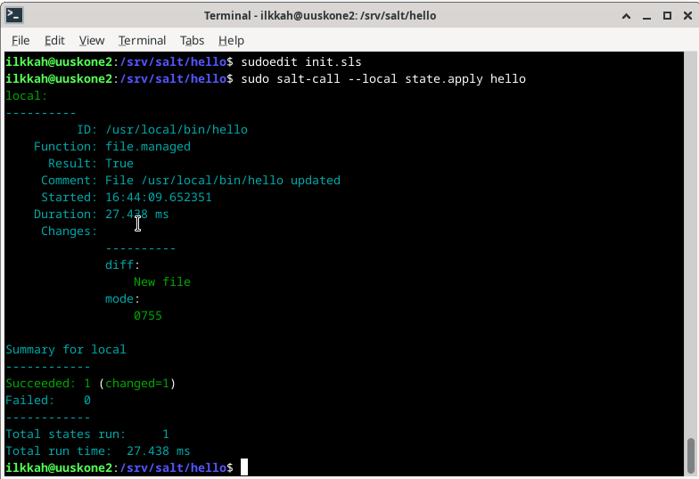
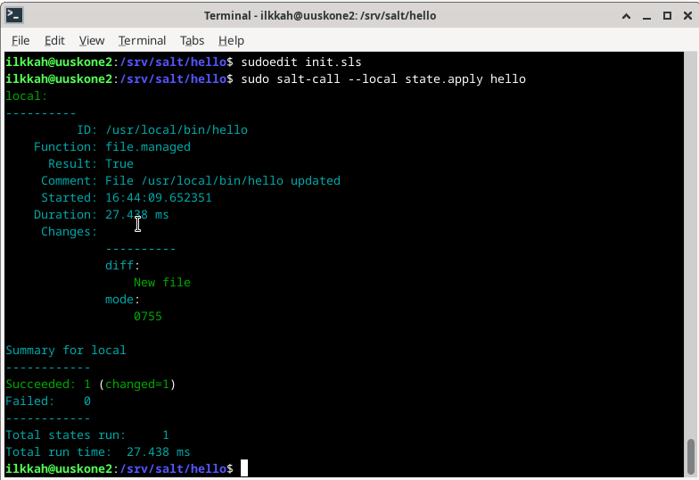
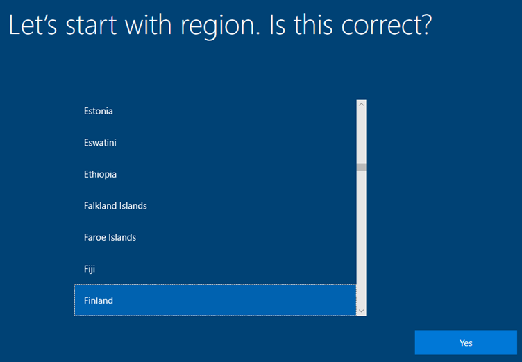

Lisäsin paketin hallintaan tiedot mistä Saltin voi hakea komennoilla, jotka näytettiin tunnilla.
Sen jälkeen ”sudo apt-get update” ja ”sudo apt-get install salt-minion”

”sudo salt-call - -version” Sulfur versio on asentuneen Saltista koneella.

”sudo salt-call --local -l info state.single pkg.installed tree”
Paketti pitää olla asennettuna, tässä tapauksessa tree komento asensi ohjelman, jos komennon laittaa uudestaan tuo changed=1 ei tulostu, koska mikään ei muutu tilanteessa, kun tree on jo asennettu.

Loin tmp kansioon helloilkka tiedoston komennolla touch helloilkka ja sen jälkeen ajoin salt komennon ”sudo salt-call --local -l info state.single file.managed /tmp/helloilkka” salt löysi tiedoston ja ei tehnyt muutoksia siihen.
Apache2 palvelin pyöri koneella, Sammutin apachen pyörimästä komennpolla: “sudo salt-call --local -l info state.single service.running apache2 enable=False”

Komento “sudo salt-call --local -l info state.single user.present ilkkah”
Tarkastaa on ilkkah käyttäjä kirjautuneena sisään. Näin todellakin tässä tapauksessa on. Ehkä hyödyllisempi, kun on useampia orjia.
sudo salt-call --local -l info state.single cmd.run 'touch /tmp/test' creates="/tmp/test"
Salt loi tiedoston test kansioon /tmp/

Udestaan komento ” sudo salt-call --local -l info state.single pkg.installed tree”
tree paketti oli jo asennettuna, joten tulos on idempotentti. Komennon voi ajaa usemman kerran ja tulos ei muutu.
Tästä puuttui terokarvinen.com sivuilta ohjeet. En alkanut selvittämään omatoimisesti. Muistaakseni ei tunnillakaan käyty läpi.
Lähteenä on käytetty: Terokarvinen.com
Cattle, not pets.
Vagrantin asennus windowsille Vmwaren kanssa osoittautui jokseenkin haastavaksi, ohjeita ei ollut paljon. Jo pitkään ollut tämä mielessä, joten päätin asentaa Linuxin toiseksi käyttöjärjestelmäkseni pääkoneeseen Windowsin rinnalle. Valitsin Linuxiksi Debian 12.
Asensin Rufuksen Windowsille ja loin bootaavan usb tikun Debianilla
Kirjoitan seuraavan osion ulkomuistista.
Debianin asennus onnistui mutta tuli grafiikka bugeja, en aluksi päässy kirjautumaan roottina, mutta komento ”su – root” onnistui sen tekemään. Koitin päivittää näytönohjaimen ajureita, se osoittautui hankalaksi. Näytön ohjain on Nvidia 3080 RTX mobile paketinhallinnasta niitä ei löytynyt. Nvidian sivuilta sain .run tiedoston, jonka muokkasin ”chmod u+x tiedostonimi” suoritetavaksi tiedostoksi kaikki tämä kun näyttö pomppi miten sattuu ja oli hankalaa lukea. komento ./nvidia-drivers-xxx-xxx.run. Installeri varoitti, että X-server pyörii ja se pitää lopettaa. Googlasin, mutta ohjeet eivät auttaneet, tietokone oli ohjeiden jälkeen aina käynnistettävä reset napilla uudestaan. Ohjeita oli esim. CTR+ALT+F1 tai ”sudo service gdm stop” Kokeilin useita muitakin metodeja ratkaista ongelma, asensin jopa kahteen kertaan koko Debianin ja lopuksi kokeilin vielä Ubuntua asentaa, mutta se tökkäsi jo asennus vaiheessa mustaan ruuttuun. Tähän kaikkeen meni aikaa yli 6 tuntia
P√§√§tin palata asentamaan Vagrantin Windowsille, koska Linuxin asentaminen raudalleni tuntuu olevan todella haastava homma. T√§ll√§ hetkell√§ Grubissa on pari debiania asennettuna. Mitenh√§n sen siivoaisi? üòä
Googlasin ohjeet vagrantin asennukseen Windows 11 ja Vmawarelle, löysin Github sivun: Install vagrant with vmware for windows 11 (github.com)
Latasin ja asensin Gon (ohjelmointikieli), uudelleen asennus vaadittin
Skippasin kohdan 2, koska minulla oli jo Vmware asennettuna.
Latasin ja asensin Vagrantin VMware Utilityn.
Aloin asentamaan pluginia Vmwarelle, näiden ohjeiden mukaan: Introducing the Vagrant VMware Desktop Plugin (hashicorp.com)
Pyysin lisää aikaa tehtävien tekoon ja jatkan tästä..
jatkoin 6.11.2023
Selvitin tuo Vagrant VMware Desktop Plugin on maksullinen, koitan vielä asentaa Ubuntun tuoreimman ei LTS version koneelleni.

Sain Ubuntun version 23.10 ilman ongelmia pyörii nyt raudan päällä siis. Nyt tehtävien pariin.
Komento ”sudo apt-get install vagrant virtualbox” komento asensi vagrantin ja virtualboxin
komento alustaa Debianin version bullseye64 toimimana vagrantissa ja luo Vagranfile tiedoston, tiedostolla voi muokata asetuksia ympäristössä ”vagrant init debian/bullseye64”

Debian/bullseye64 ei löytynyt aluksi, joten vagrant latasi sen.

Synkronoidut kansiot ovat päällä, tämä pitää kyllä opetella laittamaan pois päältä. Komentohan tuossa onkin jo annettu valmiiksi, kun muuttaa ilmeisesti vagrantfilessä olevia tietoja.

Komento ”vagrant ssh” ja siellä pyörii debian ja olen kirjautuneena sisään
Tehtävä pitäisi olla paremmin avattu. Eli vagrant koneelle vai pääkoneelle.
Asennan pääkoneelle. ”sudo apt-get update”, ”sudo apt-get install salt-minion”
eipä asennukkaan myöskään ubuntuun. Lisäsin paketinhallintaan näiden ohjeiden mukaisesti: Docs.saltprojet.io

sitten komento uudestaan ”sudo apt-get update” ja sudo apt-get install salt-minion” ja vielä komento ”sudo apt-get install salt-master”, kummatkin asentuivat hienosti

Yritin käynnistää salt masterin ja minionin, eipä lähteneetkään käyntiin.
Koitin ohjeiden mukaan, vaikka ne ovatkin debianille, mutta käsittääkseni Ubintu on debian pohjainen distro, joten ne saattavat toimia.
Laitoin komennon ”sudo systemctl enable salt-master && systemctl start salt-master” ja ukomennon ”sudo systemctl enable salt-minion && systemctl start salt-minion”

komento ”ps aux -e | grep salt” löytyi prosessit joita salt-minion ja salt-master käytttä. Se siis oli nyt asennettu koneelle.

arkastin vielä saltin version komennolla ” salt-call --version”
komento ”sudo hostname I” tällä sai masterin ip:n selville

komento ”nc -vz 192.168.178.70 4505” portiin kytekeytyminen tcp yhteydellä onnistui eli portti on ylipäättään auki.
”vagrant ssh”
”sudo apt-get install micro”
”sudo micro etc/salt/minion”
lisätään tiedostoon master: 192.168.178.70
id: ilkkah

”sudo systemctl enable salt-minion && systemctl start salt-minion”
eipä antanut vagrant virtuaalikone käynnistää salt-minionia
”ps aux -e | grep salt”
kyllä se siellä pyöri kuitenkin

kokeilin käynnistää salt orjan uudestaan näiden ohjeiden mukaan: Terokarvinen.com salt-quickstart salt master and slave on ubuntu
”sudo systemctl restart salt-minion.service”
sitten ”logout” mutta vagrant kone sanoo, että There are stopped jobs. Mitköhän nyt sitten? :)
Googlasin ja ohjeita Stackexchange.com
uudestaan vaan komento ”exit”

”sudo hostname I” ei antanut mitään tulosta
”salt-master” väärin uudelleen käynnistetty salt-master
”sudo salt-master” taas väärin uudelleen käynnistetty salt-master” virhe ilmoitus, koska se pyörii jo. Pitäisi käynnistää udeelleen systemctl avulla
”sudo hostname -I” kuitenkin antaa nyt IP osoitteen
”sudo salt-key -A” The key glob ’*’ does not match any unaccepted keys. En kyllä tajua missä vika
Kävin katsomassa vielä etc/salt/minion tiedostoa ja ip osoitteessa oli kirjoitusvirhe. Korjasin sen ja tadaa.

Komento ”sudo salt-key” paljasti, että orjaoli ilmoittautunut.
Komento ”sudo salt-ket -A” hyväksyin vaimen.

Ja testaus, että orja vastaa ja toimi.
Lähteenä on käytetty: Terokarvinen.com
Loin repositorion Github nettisivuilla, en luonut vielä ssh avainta. katsoin miten tämä toimii.
komennolla ”git clone repostorion osoite.git” sain kopioitua repositorion koneelle. Githubissa laitoin repostitorion publiciksi ja loin read.me tiedoston ja kirjoitin siihen hieman tekstiä.
Homma ei toiminut, kysyi käyttäjätunnusta ja salasanaa ja niillä en päässyt sisään.
Loin komennolla ”ssh-keygen” Enter Enter ssh avaimen ja kopioin sen Githubin ssh avaimiin sen jälkeen poistin virtuaalikoneelta tuon kansion ja kloonasin sen uudestaan.

Muokkasin microlla README.md tiedostoa ja lisäsin tekstin testi.
Komento ”git add README.md”
Komento “git commit -m “tekstiä…”
ja komento ”git push”

Repositorio oli päivittynyt Githubiin
Lisäsin tekstiä ”tyhmä muutos” REDME.md tiedostoon
komento ”git add README.md” Komento “git reset –hard”
Git palautti version aikaisempaan
Author commitin tekijä
Date pvm ja kellonaika, aikavyöhyke
commitin sisältö
---------
/tmp/infra-as-code:
file.managed
---------
----------
base:
‘*’:
- hello
----------
Artikkeli käsittelee demonien ohjausta Saltilla ja kuinka vaihtaa SSH serveriin alterna-tiivinen portti
Lähteenä on käytetty: Terokarvinen.com

Apachen hakemistossa komento ” find -printf '%T+ %p\n'” näyttää tiedostot ja niiden muokkausajat. \n vaihtaa riviä.

Kotihakemistossa komento ” find -printf '%T+ %p\n'”
Vaihdoin Firefoxin alku sivun ”http://www.heusala.fi/HH/PalvelintenHallinta.html”
Mutta en löytänyt etc/firefoxi-esr hakemistosta mitään tiedostoa mitä olisi muokattu. Kokeilin myös etsiä tiedostoa ”find -printf '%T+ %p\n' | sort” mutta ei löytynyt.
Kokeilin vielä vaihtaa fonttien asetuksia Libreofficesta, mutta en löytänyt näitäkään. Libreofficen hakemistossa suoritin komennon ”find -printf '%T+ %p\n' | sort”
Kokeilin juurihakemistossakin tehdä komentoa ” find -printf '%T+ %p\n' | sort” mutta tuli liikaa tiedostoja ja en alkanut sieltä etsimään, kun pari viimeistä vaihtoehtoa ei ollut sopivia.
Loin tiedoston hello tiedoston srv/salt/hello/ kansioon sisällöllä:
Loin init.sls tiedoston samaan kansioon sisällöllä:
 

komento ”sudo salt-call --local state.apply hello” Näkyi että uusi tiedosto oli luotu.

Kävin vielä katsomassa usr/local/bin hakemistosta, että tiedosto oli luotu sinne ja mitä se sisälsi. koitin vielä, mitä käy kun kirjoitaa missä tahansa hakemistossa hello. Se suoritti tuon ohjelman, joka tulostaa sanan Hello ja päivämäärän, ajan ja aikavyöhykkeen.

Olen mökillä ja jäätyi putket, hitto. Pitää lähteä naapuriin saunomaan, teen tämän myöhemmin.
tein kansion ”sudo mkdir -p kansiollinenkomentoja” srv/salt/ kansioon.
Kopion kansioon aikaisemmin luomani hello tiedoston ja loin uuden tiedoston pyyttoni.py alla olevalla sisälöllä:
sitten komento ”sudoedit init.sls”

Muuten sama sisältö tiedostossa kuin hello kansiossa, mutta lisäsin siihen uuden kohdan pyyttoni.py tiedostoa varten. ja muutin kummankin tiedoston polut vastamaan kansiorakennettani.
Komento ”sudo salt-call --local state.apply hello” näkyi, että yksi tiedosto oli muuttunut ja se oli pyyttoni.py, koska hello tiedosto löytyi jo usr/local/bin kansiosta.

ajoin vielä pyyttoni.py komennon
Lähteenä on käytetty: Terokarvinen.com
Näitä on nyt luettu, eikä tämä toimi ympäristössäni
Tein päin vastoin ja listasin, mistä haluan enemmän tietoa, jotka ovat tuntemattomampia minulle, joihin haluan tulevaisuudessa perehtyä enemmän.
Aloin luomaan uutta virtuaalikonetta VMWarella.
Tein iso tiedoston Windows media creation toolin avulla, jo aikasemmin Penetraatiotestaus kurssilla Tässä linkki raporttiin
Valitsin windowsin .iso tiedoston koneeltani
valitsin minne kone tallennetaan.
Valitsin millainen käynnistyslohko? onko termi oikein? luodaan, BIOS on vanhempi, Basic input out put system, UEFI on uudempi ja Windows 11 alkaen tarvitaan Secure boot valinta. Jätin sen pois, koska kyseessä Win 10 Pro.
Valitsin neljä prosessoria ja kussakin 2 ydintä, koska Windows toimii sulavammin mitä enemmän on tehoa. On esim. raskaampi kuin Linux.
Valitsin 16GB keskusmuistia virtuaalikoneelle.
NAT päälle, jotta netti toimii.
Valitsin suosituksen, en ole varma mikä to Paravirtualized valinta on. Mutta kyse on siis kovalevyn controlleri tyypistä, joka ohjaa kovalevyjen kirjoitusta ja luentaa. SCSI on vanhaa tekniikkaa, nykyään käytetään Nvme.2 asemia ja niiden m.2 kontrollereita tietääkseni.
Kovalevyn tyyppi, VMware näköjään tukee NVMe asemien tyyppiä, tästä etuna huimasti paremmat lukunopeudet, kuin muilla valinnoilla. Koneessani on NVMe asema, joten tämä valinta toimii hyvin.
Loin uuden virtuaalisen kovalevyn ja painoin Next.
Laitoin 100Gb kovalevyn kooksi ja halusin sen vain yhteen tiedostoon, oikeasti mielestäni sen siirtäminen on helpompaa, kuin useamman tiedoston, vaikka VMWare yllä olevassa kuvassa niin väittääkin.
Valitsin polun, minne vituaalikoneen kovalevy tallennetaan.
Tämän jälkeen asennus käynnisty.
Valitsin yllä olevat kieli, aika ja valuutta asetukset, sekä syöttökielin näppäimistölle, Painoin Next ja Install.
Seuraavaksi Windows kysyi aktivointi koodia. Syötin koodin ja installeri siirtyi eteenpäin.
Hyväksyin sopimusehdot lukematta ja myin sieluni kaupallisuudelle.
Valitsin Custom: install Windows only (Advanced), koska ylempi valinta ei tee mitään järkeä tyhjässä koneessa.
Tässä riittää, kun klikkaa Next, se luo 100 gigatavun osioinnin levylle ja koko 100gb on siis käytettävissä yhdellä asema kirjaimella ”C:\”
Asentaja alkoi kopioimaan tiedostoja
sitten tuli automaattisen uudelleenkäynnistyksen aika.
Ehdotus oli oikein, klikkasin Yes.
Valitsin näppäimistöksi Suomen.
Valitsin Skip, koska en halua toista näppäimistö asettelua Windowsiin. Tässä vaiheessa Windowsin asennuksen aloituksesta oli kulunut 6 minuuttia. Asentaja alkoi tämän jälkeen määrittämään Windowsia käyttökuntoon, tämän aika virtuaalikone käynnistyi muutaman kerran uudelleen.
Valitsin Set up for personal use ja klikkasin Next.
Katsotaan, onnistuuko tämä ilman tilin asennusta, en haluisi liittää tätä konetta ja lisenssiä omaan Microsoft tiliini. Valitsi vasemmasta alakulmasta Offline account ja Next.
Ilman Microsoft tiliä saa rajoitetun Windows kokemuksen. Valitsin siis Limited experience vasemmasta alakulmasta. Enkä painanut Next nappia.
valitsin käyttäjäksi ”ilkkah” ja painoin Next.
Valitsin suht turvallisen salasanan, jonka muistan, koska online toiminnot eivät ole käytössä tämän unohtaminen aiheuttaa isomman päänvaivan. Klikkasin sen jälkeen Next.
Vahvistin salasanan toiseen kertaan, että se varmasti on oikein kirjoitettu.
Näitä kysytään koska online tominnot eivät ole käytössä, tässä on mielestäni tietoturvariski, koska nämä voidaan mahdollisesti saada henkilöstä selville. En vastannut näihin todenmukaisesti.
Vastasin No ja Accept, en halua, että Microsoft hyödyntää sijaintitietojani.
Vastasin No ja Accept, tämä on kätevämpi ominaisuus läppärin kanssa, jos vaikka häviää, vaatii tosin aikaisemman hyväksynnän sijainti tiedoille.
Valitsin Send Required diagnostic data, en halunnut lähettää kaikkea valinnaista lisätietoani Microsoftille. Huom! valintaa ei ole, missä mitään telemetria tietoja ei lähetettäisi. Olisi kiva tietää mitä kaikkea tämä Required valinta sisältää tiedoista.

Valitsin No ja Accept, koska en halua, että Microsoft saa tietää mitä kirjoitan koneellani.
Valitsin No ja Accept, koska en halua tietojeni valuvan jo maksamastani tuotteesta Microsoftille, koska se voi olla arkaluonteista.
Valitsin No j Accept, en mielelläni halua saada käyttöjärjestelmääni yhtään mainsta, saati sitten kohdennettua.
Valitsin Skip, koska en käytä tätä konetta erityisesti juuri noihin kategorioihin.
Sitten alkoi odotus, tässä vaiheessa aikaa oli kulunut asennuksen aloituksesta 28minuuttia, tosin asennusta hidasti tämän raportin kirjoittaminen samaan aikaan.
alle puolituntia kokonaisuudessaan ja työpöytä oli käytössä.
Klikkasin I Finnished Installing VMWaren ikkunaan, joka oli koko asennuksen ajan näkyvissä. En ole tarvinnut tuota virtuaalista näppäimistöä missään Windows tai Linux asennuksessa. Chromebookin käyttöjärjestelmää virtualisoidessa, siitä oli hieman apua. Seuraavaksi päivitin Windowsiin kaikki päivitykset, jotka oli saatavilla Windows updatesta.
Kun windows update latasi tiedostoja VMWare antoi ponnhdusikkunan:

Tämä on mielestäni yksi parhaiten toteutettuja asioita VMWaressa, se ehdottaa asentamaan työkalut, jolla virtuaalikoneen käytöstä tulee mielyttävämpää. Esim. Graaffiset ominaisuudet paranevat ja leikepöytä alkaa toimimaan. VirtualBoxilla ja Linuxilla en ole vielä koskaan saanut Guest Additionsia toimimaan, sen takia käytän VMWarea.
Tuli vielä lisäohjeistus asiaan. Eli Run komento D:\setup.exe, jos asennus ei käynnisty.
Tein sen ja VMWaren työkalut lähtivät asentumaan.
Valitsin Next.
Valitsin Typical ja Next.
Valitsin Install. Työkalut lähtivät asentumaan.
VMWare toolsin asennus vaatii virtuaalikoneen uudelleen käynnistyksen. Klikkasin Finnish, mutta en käynnistänyt konetta vielä uudestaan, koska Windowsin päivityksiä oli vielä asentumassa.
Päivitykset latautuvat ja oli uudelleenkäynnistyksen aika. Painoin Restart now.
Tämä vie hetken aikaa, omien kokemuksieni mukaan, vaikka virta sammuisi, saattaa Windows silti kyetä hallitsemaan tilanteen ja uudelleen käynnistyksen yhteydessä korjata tilanteen. Ei kyllä toimi aina näin ja voi olla, että joutuu asentamaan Windowsin uudestaan.
Vielä kerran Windowsin päivitykset kuntoon, yhdellä kertaa ei onnistu järjestelmän päivittäminen.
Päivitykset olivat kunnossa, nyt lataamaan vielä valinnainen laatu päivitys, niin kuin tekisin omallakin koneellani, että saa uusimmat kilkkeet käyttöön.
Tässä kestää taas aikaa.
Päätin ajankuluksi katsoa tässä välissä, kykeneekö virtuaalikoneeni rauta pyörittämää Windows 11. Uskoisin, että ei koska käynnistyslohkoa luodessani valitsin UEFI ilman Secure Boottia, jonka käsittääkseni Windows 11 vaatii.
Klikkasin linkkiä Check hardware requirements ja sieltä PC Health Check app linkkiä, koska Käytössäni oli Windows 10.
Käynnistin lataamani tiedoston ja asensin PC Helth Check ohjelman.

Jätin asian sikseen, koska tarkastus vaatii Microsoftin tilille kirjautumisen. Kokeilen joskus myöhemmin uudestaan.
Taas tarvittiin uudelleen käynnistys. Tämän uudelleen käynnistyksen jälkeen tarkastin vielä kerran päivitykset ja ei tullut enää uusi päivityksiä.
Latasin saltin tästä linkistä
ja asensin sen, versio oli 3006.4, muistaakseni tämä on sama, kuin Linuxilla, eli Sulfur.

Laitoin Masterin Nimeksi Master ja Minionin nimeksi Minion1, Default Config ja painoin Install.
Tämä viittaa jonkin näköiseen kirjastoon ilmeisesti, jota Salt tarvitsee, Valitsin Yes. Nimellä voisi googlata, jos haluaa lisätietoja.
Avasin Powershellin Administrator oikeuksilla annoin komennon ”salt-call” ja ”salt-call --version” versio todellakin oli Sulfur.
Kokeilin komentoa “salt-call --local -l info state.user.present ilkkah” joka oli käyttäjänimeni.
Tämä ei näyttänyt toimivan windowsilla.
Kokeilin seuraavan komennon, ”salt-call --local grains.items osfinger”
Tulostui tietoja virtuaalikoneesta. Prosessori, täsmäsi host koneeseeni. Ja tuolla näkyy aikaisemmin valitsemani secure-boot falsena, niin kuin valitsin asennuksessa. IPv4 ja IPv6 osoitteet tietokoneesta. Tuo Secure boot on mielenkiintoine, jos koitan päivitää tämän Windows 11 koneeksi herjaako tuosta ja asennus keskeytyy. Minulla on vanha versio WMWaresta, koska en ole halunnut maksaa uudemmasta, toistaiseksi ainakaan. En edes tiedä kykeneekö tämä VMWare 16.x pyörittämään Windows 11.
En tiedä mikä on Linuxin ”Srv” kansiota vastaava kansio Saltilla Windowsissa, en kerkeä selvittämään tätä tällä hetkellä. Tässä olisi pitänyt luoda init.sls tiedosto YAML kielellä ja käyttää file.managed komentoa.
Tämä kiinnostaa kovasti, mutta aika ei nyt vain riitä. Opettelen tämän takuuvarmasti.
Lähteenä on käytetty: Terokarvinen.com